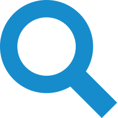
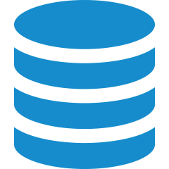

Récupération de données de séries présentes sur le site seriebox.com avec Scrapy
Sauvegarde des données via la base de données non traditionnelle MongoDB
Mise en forme et affichage des données collectées avec la librairie D3.js
Ce projet à été réalisé par Lénaïc Couellan et Raphaël Erfani dans le cadre d'un projet pédagogique lors du Master 2 DNR2i en novembre 2016.
Source : www.seriebox.com